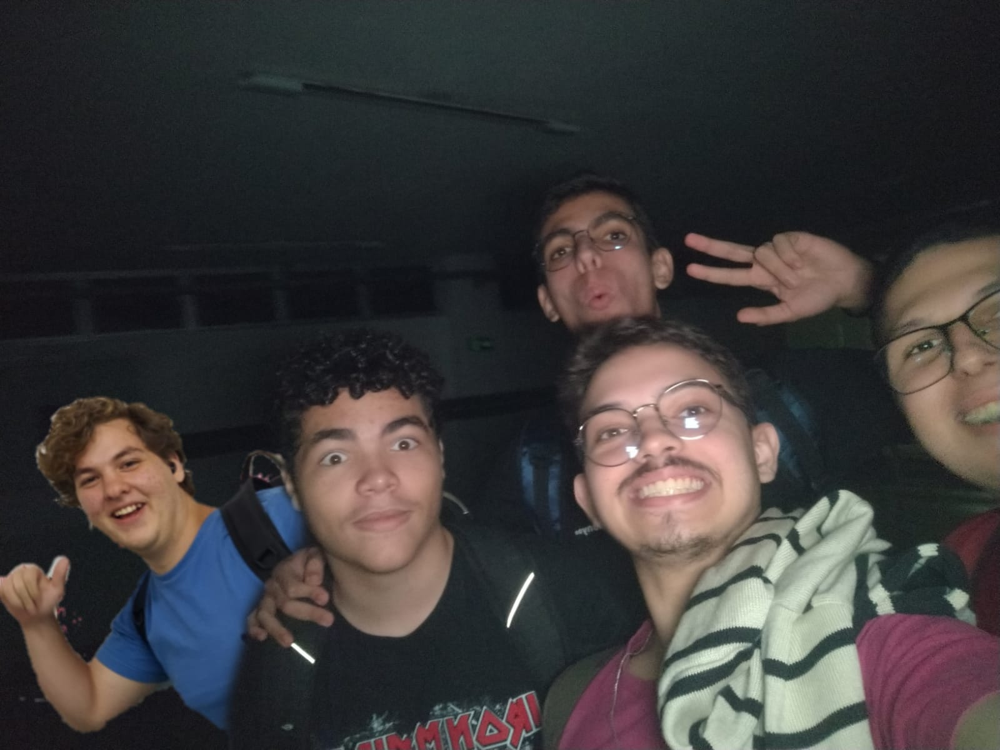

Nossa História
Fundada em 2024, a Pizzaria G&G começou com a missão de trazer sabores artesanais e ingredientes frescos para o coração da cidade. O nome "G&G" vem dos fundadores, Gustavo e Gabriel, que sempre foram apaixonados pela arte de fazer pizzas. Nossa pizzaria rapidamente se tornou um ponto de encontro para famílias, amigos e amantes de boa comida, graças à nossa dedicação em oferecer uma experiência culinária única.
Hoje, com uma equipe dedicada e um ambiente acolhedor, a Pizzaria G&G continua a inovar com receitas exclusivas e opções clássicas que agradam todos os paladares. Desde as tradicionais pizzas salgadas até nossas deliciosas criações doces, cada prato é feito com carinho e atenção aos detalhes.
Nossa Missão
A missão da Pizzaria G&G é simples: oferecer pizzas saborosas feitas com ingredientes de alta qualidade, proporcionando um ambiente onde as pessoas possam compartilhar momentos inesquecíveis. Queremos que cada cliente sinta o cuidado em cada mordida e saia de nossa pizzaria com um sorriso no rosto, satisfeito tanto com o atendimento quanto com os sabores únicos.
Venha Nos Visitar
Localizada no laboratório do campus IFPB, nossa pizzaria está de portas abertas todas as sextas de manhã. Venha nos visitar e conhecer de perto o que faz da Pizzaria G&G um lugar tão especial para tantas pessoas. Se preferir, faça seu pedido online e experimente o sabor incomparável de nossas pizzas no conforto de sua casa!